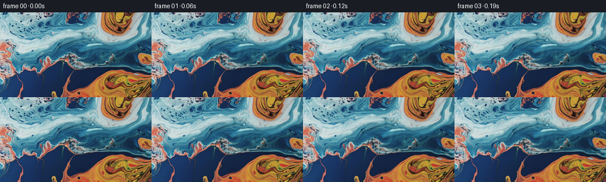

候选 01 · 2026-11-08T23:13:47.972230+00:00 · 点开播放与检查图
inspection.png

transition_check.png

代码变化
--- 上一保存版本
+++ 本次保存版本
@@ -0,0 +1,152 @@
+"""Animate the supplied liquid photograph using a continuous liquid-surface flow.
+
+No image synthesis assets are used: all color and surface detail is sampled from
+first_frame.png. The backward material map is integrated without repeatedly
+resampling RGB, which keeps the liquid's fine reflected texture sharp.
+"""
+from pathlib import Path
+import json
+import numpy as np
+from PIL import Image
+from artifact_io import save
+
+ROOT = Path(__file__).resolve().parent
+
+
+def reflect_indices(p, n):
+ q = np.mod(p, 2 * (n - 1))
+ return np.where(q < n, q, 2 * (n - 1) - q).astype(np.int32)
+
+
+def cubic_weights(t):
+ # Interpolating Catmull--Rom filter: exact identity at integral coordinates.
+ t2, t3 = t*t, t*t*t
+ return (-(t / 2) + t2 - t3 / 2,
+ 1 - 2.5*t2 + 1.5*t3,
+ t / 2 + 2*t2 - 1.5*t3,
+ -t2 / 2 + t3 / 2)
+
+
+def sample_rgb(image, x, y):
+ h, w = image.shape[:2]
+ xi, yi = np.floor(x).astype(np.int32), np.floor(y).astype(np.int32)
+ wx, wy = cubic_weights(x-xi), cubic_weights(y-yi)
+ xs = [reflect_indices(xi+i-1, w) for i in range(4)]
+ ys = [reflect_indices(yi+i-1, h) for i in range(4)]
+ out = np.zeros(x.shape + (3,), np.float64)
+ for j in range(4):
+ row = np.zeros_like(out)
+ for i in range(4):
+ row += image[ys[j], xs[i]] * wx[i][..., None]
+ out += row * wy[j][..., None]
+ return out
+
+
+def flow_velocity(x, y, w, h):
+ # Two broad counter-rotating currents, a weaker middle eddy, and shear.
+ # The velocity's normal component goes smoothly to zero at the crop edge.
+ u = np.zeros_like(x)
+ v = np.zeros_like(y)
+ for cx, cy, radius, spin in [(0.27*w, 0.32*h, 74., .078),
+ (0.74*w, 0.62*h, 64., -.093),
+ (0.44*w, 0.91*h, 41., .032)]:
+ dx, dy = x-cx, y-cy
+ a = spin * np.exp(-(dx*dx+dy*dy)/(2*radius*radius))
+ u -= a*dy
+ v += a*dx
+ u += 1.45*np.cos(y/h*np.pi*1.2) + .6
+ v += .55*np.sin(x/w*2*np.pi) - .35
+ u *= np.sin(np.pi*np.clip(x/(w-1), 0, 1))
+ v *= np.sin(np.pi*np.clip(y/(h-1), 0, 1))
+ return u, v
+
+
+def integrate_material(x, y, dt, w, h):
+ # Backward characteristics of the steady, spatially varied current.
+ a, b = flow_velocity(x, y, w, h)
+ c, d = flow_velocity(x-dt*a/2, y-dt*b/2, w, h)
+ e, f = flow_velocity(x-dt*c/2, y-dt*d/2, w, h)
+ g, k = flow_velocity(x-dt*e, y-dt*f, w, h)
+ return x-dt*(a+2*c+2*e+g)/6, y-dt*(b+2*d+2*f+k)/6
+
+
+def surface_refraction(x, y, t, w, h):
+ # Dispersive oblique waves. Differences relative to t=0 preserve the
+ # supplied initial surface exactly rather than fading into a new image.
+ dx = np.zeros_like(x)
+ dy = np.zeros_like(y)
+ glint = np.zeros_like(x)
+ # wavelength, direction, seconds/period, phase, horizontal/vertical excursion
+ waves = [(103., 1.29, 4.23, .35, .70, 2.65),
+ (64., 1.84, 3.17, 2.13, -.55, 1.52),
+ (39., 1.13, 2.21, 4.32, .32, .68),
+ (23., 1.67, 1.54, 1.42, -.10, .25),
+ (14.5, 1.37, 1.09, 3.46, .04, .09),
+ (88., .31, 4.71, 5.12, 1.40, .24)]
+ for index, (length, angle, period, phase, ax, ay) in enumerate(waves):
+ # A slowly meandering wavefront avoids a mechanically uniform ripple.
+ s = (2*np.pi/length)*(x*np.cos(angle)+y*np.sin(angle))
+ s += phase + .28*np.sin(x/91 + y/77 + phase)
+ speed = 2*np.pi/period
+ now = s-speed*t
+ difference = np.sin(now)-np.sin(s)
+ dx += ax*difference
+ dy += ay*difference
+ if index < 4:
+ glint += (.012/(1+.55*index))*(np.cos(now)-np.cos(s))
+ # Broad, gentle swell between the finer ripples.
+ p = x/104 + y/83
+ dx += 1.25*(np.sin(p-.71*t)-np.sin(p))
+ dy += .75*(np.sin(x/76-y/118+.49*t)-np.sin(x/76-y/118))
+ # Edge taper only affects the normal motion, not the tangential currents.
+ tx = 1 - np.exp(-np.minimum(x, w-1-x).clip(0)/12)
+ ty = 1 - np.exp(-np.minimum(y, h-1-y).clip(0)/10)
+ return x+dx*tx, y+dy*ty, glint
+
+
+def generate():
+ source = np.asarray(Image.open(ROOT/'first_frame.png').convert('RGB'))
+ spec = json.loads((ROOT/'task_spec.json').read_text())
+ h, w = source.shape[:2]
+ count, fps = spec['frames'], float(spec['fps'])
+ y, x = np.mgrid[0:h, 0:w].astype(np.float64)
+ mx, my = x.copy(), y.copy()
+ frames = [source.copy()]
+ source_float = source.astype(np.float64)
+ diagnostics = []
+ for frame in range(1, count):
+ # Two integration substeps keep drift accurate across the entire shot.
+ for _ in range(2):
+ mx, my = integrate_material(mx, my, .5/fps, w, h)
+ sx, sy, glint = surface_refraction(mx, my, frame/fps, w, h)
+ rgb = sample_rgb(source_float, sx, sy)
+ # Subtle moving reflection strength, with more modulation in highlights.
+ luminance = .2126*rgb[..., 0]+.7152*rgb[..., 1]+.0722*rgb[..., 2]
+ strength = .45 + .55*np.clip(luminance/200, 0, 1)
+ rgb *= np.exp(glint*strength)[..., None]
+ frames.append(np.clip(np.rint(rgb), 0, 255).astype(np.uint8))
+ if frame in (1, 20, 40, 60, 80):
+ dxdy, dxdx = np.gradient(sx)
+ dydy, dydx = np.gradient(sy)
+ jacobian = dxdx*dydy-dxdy*dydx
+ diagnostics.append({'frame': frame,
+ 'rms_displacement': float(np.sqrt(np.mean((sx-x)**2+(sy-y)**2))),
+ 'jacobian_min': float(jacobian.min()),
+ 'folded_fraction': float(np.mean(jacobian <= 0))})
+ frames = np.stack(frames)
+ assert frames.shape == (81, 144, 256, 3)
+ assert frames.dtype == np.uint8
+ assert np.array_equal(frames[0], source)
+ differences = np.mean(np.abs(np.diff(frames.astype(np.float32), axis=0)), axis=(1,2,3))
+ stats = {'shape': list(frames.shape), 'first_frame_identical': True,
+ 'adjacent_frame_mean_absolute_difference': {
+ 'min': float(differences.min()), 'mean': float(differences.mean()),
+ 'max': float(differences.max())},
+ 'motion': diagnostics}
+ (ROOT/'generation_checks.json').write_text(json.dumps(stats, indent=2))
+ save(frames, ROOT)
+ print(json.dumps(stats, indent=2))
+
+
+if __name__ == '__main__':
+ generate()
命令 3 · 2026-11-08T23:12:26.408384+00:00/bin/bash -lc "python - <<'PY'
import numpy as np
from PIL import Image
I=np.asarray(Image.open('first_frame.png'),float)
l=I.mean(2)
for axis in (0,1):
a=np.mean(np.abs(np.diff(l,axis=axis)),axis=axis)
print('axis',axis, 'gradient by segment', [round(x.mean(),1) for x in np.array_split(a,9 if axis else 16)])
# Roughness, brightness and chromatic shares by horizontal strip
for k in range(9):
a=I[16*k:16*k+16]; y=a.mean(2)
blue=(a[:,:,2]>a[:,:,0]*1.15); orange=(a[:,:,0]>a[:,:,2]*1.4)
print(k,'lum',round(y.mean(),1),'sd',round(y.std(),1),'blue',round(blue.mean(),2),'orange',round(orange.mean(),2),'roughness', round(abs(np.diff(y,axis=0)).mean(),1))
PY"exit 0 命令 4 · 2026-11-08T23:13:44.964820+00:00/bin/bash -lc "cat > generate.py <<'PY'
\"\"\"Animate the supplied liquid photograph using a continuous liquid-surface flow.
No image synthesis assets are used: all color and surface detail is sampled from
first_frame.png. The backward material map is integrated without repeatedly
resampling RGB, which keeps the liquid's fine reflected texture sharp.
\"\"\"
from pathlib import Path
import json
import numpy as np
from PIL import Image
from artifact_io import save
ROOT = Path(__file__).resolve().parent
def reflect_indices(p, n):
q = np.mod(p, 2 * (n - 1))
return np.where(q < n, q, 2 * (n - 1) - q).astype(np.int32)
def cubic_weights(t):
# Interpolating Catmull--Rom filter: exact identity at integral coordinates.
t2, t3 = t*t, t*t*t
return (-(t / 2) + t2 - t3 / 2,
1 - 2.5*t2 + 1.5*t3,
t / 2 + 2*t2 - 1.5*t3,
-t2 / 2 + t3 / 2)
def sample_rgb(image, x, y):
h, w = image.shape[:2]
xi, yi = np.floor(x).astype(np.int32), np.floor(y).astype(np.int32)
wx, wy = cubic_weights(x-xi), cubic_weights(y-yi)
xs = [reflect_indices(xi+i-1, w) for i in range(4)]
ys = [reflect_indices(yi+i-1, h) for i in range(4)]
out = np.zeros(x.shape + (3,), np.float64)
for j in range(4):
row = np.zeros_like(out)
for i in range(4):
row += image[ys[j], xs[i]] * wx[i][..., None]
out += row * wy[j][..., None]
return out
def flow_velocity(x, y, w, h):
# Two broad counter-rotating currents, a weaker middle eddy, and shear.
# The velocity's normal component goes smoothly to zero at the crop edge.
u = np.zeros_like(x)
v = np.zeros_like(y)
for cx, cy, radius, spin in [(0.27*w, 0.32*h, 74., .078),
(0.74*w, 0.62*h, 64., -.093),
(0.44*w, 0.91*h, 41., .032)]:
dx, dy = x-cx, y-cy
a = spin * np.exp(-(dx*dx+dy*dy)/(2*radius*radius))
u -= a*dy
v += a*dx
u += 1.45*np.cos(y/h*np.pi*1.2) + .6
v += .55*np.sin(x/w*2*np.pi) - .35
u *= np.sin(np.pi*np.clip(x/(w-1), 0, 1))
v *= np.sin(np.pi*np.clip(y/(h-1), 0, 1))
return u, v
def integrate_material(x, y, dt, w, h):
# Backward characteristics of the steady, spatially varied current.
a, b = flow_velocity(x, y, w, h)
c, d = flow_velocity(x-dt*a/2, y-dt*b/2, w, h)
e, f = flow_velocity(x-dt*c/2, y-dt*d/2, w, h)
g, k = flow_velocity(x-dt*e, y-dt*f, w, h)
return x-dt*(a+2*c+2*e+g)/6, y-dt*(b+2*d+2*f+k)/6
def surface_refraction(x, y, t, w, h):
# Dispersive oblique waves. Differences relative to t=0 preserve the
# supplied initial surface exactly rather than fading into a new image.
dx = np.zeros_like(x)
dy = np.zeros_like(y)
glint = np.zeros_like(x)
# wavelength, direction, seconds/period, phase, horizontal/vertical excursion
waves = [(103., 1.29, 4.23, .35, .70, 2.65),
(64., 1.84, 3.17, 2.13, -.55, 1.52),
(39., 1.13, 2.21, 4.32, .32, .68),
(23., 1.67, 1.54, 1.42, -.10, .25),
(14.5, 1.37, 1.09, 3.46, .04, .09),
(88., .31, 4.71, 5.12, 1.40, .24)]
for index, (length, angle, period, phase, ax, ay) in enumerate(waves):
# A slowly meandering wavefront avoids a mechanically uniform ripple.
s = (2*np.pi/length)*(x*np.cos(angle)+y*np.sin(angle))
s += phase + .28*np.sin(x/91 + y/77 + phase)
speed = 2*np.pi/period
now = s-speed*t
difference = np.sin(now)-np.sin(s)
dx += ax*difference
dy += ay*difference
if index < 4:
glint += (.012/(1+.55*index))*(np.cos(now)-np.cos(s))
# Broad, gentle swell between the finer ripples.
p = x/104 + y/83
dx += 1.25*(np.sin(p-.71*t)-np.sin(p))
dy += .75*(np.sin(x/76-y/118+.49*t)-np.sin(x/76-y/118))
# Edge taper only affects the normal motion, not the tangential currents.
tx = 1 - np.exp(-np.minimum(x, w-1-x).clip(0)/12)
ty = 1 - np.exp(-np.minimum(y, h-1-y).clip(0)/10)
return x+dx*tx, y+dy*ty, glint
def generate():
source = np.asarray(Image.open(ROOT/'first_frame.png').convert('RGB'))
spec = json.loads((ROOT/'task_spec.json').read_text())
h, w = source.shape[:2]
count, fps = spec['frames'], float(spec['fps'])
y, x = np.mgrid[0:h, 0:w].astype(np.float64)
mx, my = x.copy(), y.copy()
frames = [source.copy()]
source_float = source.astype(np.float64)
diagnostics = []
for frame in range(1, count):
# Two integration substeps keep drift accurate across the entire shot.
for _ in range(2):
mx, my = integrate_material(mx, my, .5/fps, w, h)
sx, sy, glint = surface_refraction(mx, my, frame/fps, w, h)
rgb = sample_rgb(source_float, sx, sy)
# Subtle moving reflection strength, with more modulation in highlights.
luminance = .2126*rgb[..., 0]+.7152*rgb[..., 1]+.0722*rgb[..., 2]
strength = .45 + .55*np.clip(luminance/200, 0, 1)
rgb *= np.exp(glint*strength)[..., None]
frames.append(np.clip(np.rint(rgb), 0, 255).astype(np.uint8))
if frame in (1, 20, 40, 60, 80):
dxdy, dxdx = np.gradient(sx)
dydy, dydx = np.gradient(sy)
jacobian = dxdx*dydy-dxdy*dydx
diagnostics.append({'frame': frame,
'rms_displacement': float(np.sqrt(np.mean((sx-x)**2+(sy-y)**2))),
'jacobian_min': float(jacobian.min()),
'folded_fraction': float(np.mean(jacobian <= 0))})
frames = np.stack(frames)
assert frames.shape == (81, 144, 256, 3)
assert frames.dtype == np.uint8
assert np.array_equal(frames[0], source)
differences = np.mean(np.abs(np.diff(frames.astype(np.float32), axis=0)), axis=(1,2,3))
stats = {'shape': list(frames.shape), 'first_frame_identical': True,
'adjacent_frame_mean_absolute_difference': {
'min': float(differences.min()), 'mean': float(differences.mean()),
'max': float(differences.max())},
'motion': diagnostics}
(ROOT/'generation_checks.json').write_text(json.dumps(stats, indent=2))
save(frames, ROOT)
print(json.dumps(stats, indent=2))
if __name__ == '__main__':
generate()
PY
python generate.py"exit 0